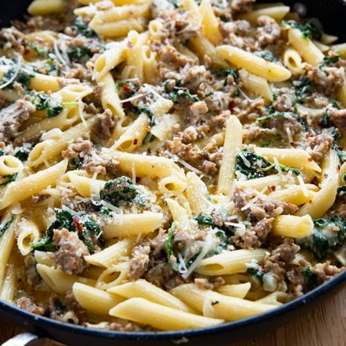

Creamy Sausage Pasta

Description:
A pasta dish containing sausage in a creamy sauce.
Ingredients:
- 3 tablespoons olive oil
- 3 large garlic cloves, minced
- 1 pound mild italian sausage
- 5 fl oz of white wine
- 5 fl oz of heavy whipping cream
- 8 oz of penne or rigatoni
- salt and pepper to taste
- 1/4 cup of grated parmesean cheese
- fresh parsley
Steps:
- Boil a large pot of salted water, cook pasta until tender, reserve 1 cup of pasta water for later
- Cook sausage in a skillet over medium heat, start with olive oil, add sausage and break up with a spatlia until it begins to brown
- Add garlic and oil if needed, pour in wine and scrape any brown bits off of the bottom of the skillet
- Simmer until wine has reduced by about half, add pasta water and half of the parmesean, stir then add cream. Stir again, season with salt and pepper
- Stir in pasta, check for seasoning, then add remaining parmesean, garnish with parsley and serve
Home